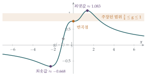

STEP I 1991, 문제 6
계속 읽기 전에 문제를 먼저 읽어 보자. 문제는 STEP Support Programme의 문제 데이터베이스에 있다: step.maths.org/questions/91-s1-q6
도입
대부분의 시험 문제는 논증을 직접 만들어 내라고 요구한다. 이 문제는 두 개의 논증을 건네주고 그것을 분해해 보라고 한다. 이것은 전혀 다른 기술이며, 대학에서 가장 많이 쓰게 될 기술이기도 하다. 자기 풀이를 점검할 때, 책에 실린 증명(proof)을 읽고 그것을 믿을지 판단할 때, 친구의 풀이를 채점할 때, 논문을 심사할 때 모두 이 기술이 필요하다.
여기 실린 논증들은 배울 점이 많은 방식으로 틀렸다. 모든 단계가 백 번쯤 본 것처럼 보인다. 몇몇 단계에는 계산 실수가 있지만, 더 심각한 오류는 논리의 오류, 즉 계산이 맞더라도 결론이 따라 나오지 않는 오류이다. 이런 오류야말로 전문적인 수학에까지 살아남는 오류이며, 그것을 찾아내는 것이 이 장의 주제이다.
시작하기 전에
“각 단계를 비판하라”는 요구를 받았을 때, 각 단계에서 무엇을 확인해야 할까? 시작하기 전에 목록을 만들어 보자.
좋은 점검 목록에는 적어도 세 가지 질문이 들어간다. 계산이 올바른가? 이 단계가 앞 단계들로부터 따라 나오는가? 숨은 가정(함수가 연속(continuous)이라는 가정, 극한이 존재한다는 가정, 정류점(stationary point)은 반드시 극대점이나 극소점이라는 가정)이 있는가? 문제는 또한 결론이 어쨌든 참일 수도 있는지를 묻는다. 틀린 논증도 참인 결론을 가질 수 있으므로, 이것은 따로 확인해야 한다.
차근차근 풀기
단계 1 도함수가 맞는가?
몫의 미분법(quotient rule)으로 \(\mathrm{g}\)를 미분해 보자. \(\mathrm{g}'(x) = 0\)이 되는 곳은 어디인가? \(x = 1\)과 \(x = -1\)을 직접 확인해 보자.
몫의 미분법에 의해 \[\mathrm{g}'(x) = \frac{6x^2(x^4 + 4) - (2x^3 + 3)\cdot 4x^3}{(x^4 + 4)^2} = \frac{-2x^6 - 12x^3 + 24x^2}{(x^4 + 4)^2} = \frac{-2x^2\bigl(x^4 + 6x - 12\bigr)}{(x^4 + 4)^2}.\] 따라서 \(\mathrm{g}'(x) = 0\)인 것은 \(x = 0\)이거나 \(x^4 + 6x - 12 = 0\)일 때이다. \(x = 1\)에서 \(x^4 + 6x - 12 = -5\)이고, \(x = -1\)에서는 \(-17\)이다. 어느 쪽도 정류점이 아니다. 첫 번째 주장은 거짓이다.
사차식 \(x^4 + 6x - 12\)는 \(x = 0\)에서 \(-12\)이고 양쪽 방향으로 \(+\infty\)로 발산하므로, 양의 근과 음의 근을 (적어도) 하나씩 가진다. 또한 이계도함수 \(12x^2\)이 음이 아니므로 이 사차식은 볼록(convex)하고, 따라서 0을 많아야 두 번 지나므로 실근은 정확히 두 개이다. 수치적으로 두 근은 \(x \approx 1.386\)과 \(x \approx -2.247\)이다.
단계 2 함숫값이 맞는가?
\(\mathrm{g}(0) = \frac34\)는 맞고, \(\mathrm{g}(1) = \frac{5}{5} = 1\)이다. 그러나 \(\mathrm{g}(-1) = \frac{-2 + 3}{1 + 4} = \frac15\)이며, \(1\)이 아니다. 이 논증은 그 자체의 기준으로 보더라도 계산 오류를 담고 있다. \(\mathrm{g}\)가 우함수(even function)라고 가정한 것으로 보인다.
단계 3 값을 비교하면 어느 것이 극대인지 알 수 있는가?
어떤 함수가 정확히 두 개의 정류점을 가지고, 그 값이 \(\frac34\)과 \(1\)이라고 하자. 그렇다면 첫 번째가 극소이고 두 번째가 극대라고 할 수 있는가?
그렇지 않다. 정류점의 종류는 국소적인 성질이다. 그것은 그 점 근처에서 함수가 어떻게 행동하는지에 달려 있을 뿐, 그 점에서의 값이 다른 곳의 값과 어떻게 비교되는지와는 관계가 없다. 함수는 극솟값보다 작은 극댓값(local maximum)을 가질 수도 있고(\(x + 2\sin x\)를 생각해 보라), 극대도 극소도 아닌 정류점을 가질 수도 있다. 여기서는 \(x = 0\) 근처에서 인수 \(x^4 + 6x - 12\)가 \(-12\)에 가까우므로 \[\mathrm{g}'(x) = \frac{-2x^2(x^4 + 6x - 12)}{(x^4 + 4)^2} > 0 \qquad\text{작은 값의 } x \neq 0.\] 도함수가 \(0\)의 양쪽에서 모두 양수이다. \(x = 0\)은 극소점이 아니라 변곡점(point of inflection)인 정류점이다.
단계 4 정류점에서의 값이 함수를 제한하는가?
정류점이 올바르게 구해졌다 하더라도, \(\mathrm{g}\)의 모든 값이 가장 작은 정류값과 가장 큰 정류값 사이에 있다고 결론지을 수 없는 이유는 무엇인가? \(\mathrm{g}(x) < \frac34\)인 \(x\)의 값을 하나 찾아보자.
정류점은 국소적인 행동만을 알려 준다. 전역적인 행동은 정의역의 끝에서, 여기서는 \(x \to \pm\infty\)일 때 무슨 일이 일어나는지에도 달려 있다. \(x \to \pm\infty\)일 때 \(\mathrm{g}(x) \to 0\)이고, \(2x^3 + 3 < 0\)일 때, 즉 \(x < -\sqrt[3]{3/2} \approx -1.14\)일 때마다 \(\mathrm{g}(x) < 0\)이므로, 이 함수는 음의 값을 가진다. 예를 들어 \(\mathrm{g}(-2) = \frac{-13}{20}\)이다. 따라서 결론 \(\frac34 \leq \mathrm{g}(x) \leq 1\)은 거짓이다(그림 3.1.1).
올바른 서술은 다음과 같다. \(\mathrm{g}\)는 증가하여 \(x \approx 1.386\)에서 약 \(1.083\)인 최댓값(global maximum)에 이른 뒤 \(0\)을 향해 감소한다. 왼쪽으로는 \(0\)에서부터 감소하여 \(x \approx -2.247\)에서 약 \(-0.668\)인 최솟값에 이른 뒤, 증가하면서 \(x = 0\)(여기서 접선이 수평인 변곡점을 가진다)을 지나 최댓값까지 올라간다. 따라서 모든 \(x\)에 대해 \(-0.668 \lesssim \mathrm{g}(x) \lesssim 1.083\)이다.

단계 5 적분
\(-3(1-x)^{-4}\)를 미분해 보자. \((1-x)^{-3}\)이 나오는가?
\(\dfrac{\mathrm{d}}{\mathrm{d}x}\bigl[-3(1-x)^{-4}\bigr] = -3 \cdot (-4)(1-x)^{-5} \cdot (-1) = -12(1-x)^{-5}\)이다. 지수도 계수도 모두 틀렸다. 올바른 역도함수(antiderivative)는 \[\int (1-x)^{-3}\,\mathrm{d}x = \tfrac12(1-x)^{-2} + C,\] 이며, 미분하여 확인할 수 있다.
올바른 역도함수를 쓰면 \(\bigl[\frac12(1-x)^{-2}\bigr]_{-1}^{3} = \frac12 \cdot \frac14 - \frac12 \cdot \frac14 = 0\)이다. 그렇다면 결국 답은 맞았던 것일까? 정말 그럴까?
그렇지 않다. 미적분학의 기본정리(fundamental theorem of calculus) \(\int_a^b F'(x)\,\mathrm{d}x = F(b) - F(a)\)는 피적분함수가 구간 \([a, b]\) 전체에서 연속이어야 성립한다. 여기서 \((1-x)^{-3}\)은 \([-1, 3]\) 안에 있는 \(x = 1\)에서 정의되지 않으며, \(x = 1\) 근처에서 값이 엄청나게 커진다. 이 적분은 이상적분(improper integral)으로 다루어야 하며, 문제가 되는 점에서 나누어야 한다. \[\int_{-1}^{1} (1-x)^{-3}\,\mathrm{d}x = \lim_{\varepsilon \to 0^+} \Bigl[\tfrac12(1-x)^{-2}\Bigr]_{-1}^{1-\varepsilon} = \lim_{\varepsilon \to 0^+} \left( \frac{1}{2\varepsilon^2} - \frac18 \right) = +\infty.\] \(-1\)부터 \(1\)까지의 적분은 무한대이고(\(1\)부터 \(3\)까지의 적분은 \(-\infty\)이다), 따라서 \(\int_{-1}^{3}(1-x)^{-3}\,\mathrm{d}x\)는 존재하지 않는다. 결론 “\(= 0\)”은 거짓인데, 그 이유는 참값이 다른 무엇이어서가 아니라 값 자체가 없기 때문이다.■
돌아보기
세 종류의 오류. 계산 오류(도함수, \(\mathrm{g}(-1)\), 역도함수), 논리적 오류(값을 비교하여 정류점의 종류를 판정한 것, 정류값을 전역적인 경계로 쓴 것), 그리고 숨은 가정(미적분학의 기본정리에서의 연속성).
맞는 답, 틀린 이유. 소문항 (ii)에서 역도함수를 바로잡으면 답 \(0\)이 다시 나오지만, 논증은 여전히 타당하지 않다. 맞아 보이는 답은 추론이 건전하다는 증거가 되지 못한다.
국소 대 전역. 도함수는 한 점 근처에서의 행동을 알려 준다. 전역적인 결론을 내리려면 더 많은 것이 필요하다. 정의역의 끝에서, 또는 함수가 제대로 행동하지 않는 점에서 무슨 일이 일어나는지를 알아야 한다.
숨은 수학
바로 이런 종류의 오류를 해석학의 창시자들도 저질렀다. 코시(Augustin-Louis Cauchy)는 1821년의 Cours d’analyse(해석학 강의)에서 연속함수들의 수렴하는 합은 언제나 연속이라고 “증명”했다. 1826년 아벨(Niels Henrik Abel)은 반례(counterexample)를 지적했다. 푸리에 급수(Fourier series) \[\sin x - \tfrac12\sin 2x + \tfrac13\sin 3x - \cdots\] 는 모든 \(x\)에 대해 수렴(converge)하고 각 항은 연속이지만, 그 합은 \(x = \pm\pi\)에서 불연속적으로 뛴다(\(-\pi < x < \pi\)에서 합은 \(x/2\)이다). 코시의 논증에서 정확히 무엇이 잘못되었는지 밝혀내는 데는 수십 년이 걸렸고, 그 결과 오늘날 해석학을 배우는 모든 학생이 익히는 균등수렴(uniform convergence)의 개념이 탄생했다. 숨은 가정, 특히 두 극한의 순서를 바꾸는 것에 관한 가정은 해석학 전체에서 가장 흔한 오류의 원천이다.
가정이 붙은 정리
이 문제의 오류 가운데 두 가지는 정리의 가정(hypothesis)을 무시한 데서 나온다.
최대최소 정리(extreme value theorem)는 닫힌 유계 구간 \([a, b]\)에서 연속인 함수가 최댓값과 최솟값을 가진다고 말한다. 이것들을 찾으려면 양 끝점, 정류점, 그리고 함수가 미분가능하지 않은 점을 모두 확인해야 한다. 예를 들어 \([-1, 1]\)에서 \(|x|\)의 최솟값은 \(0\)에서 나타나는데, 이 점은 끝점도 정류점도 아니다. \(\mathrm{f}\)가 구간 내부의 모든 점에서 미분가능하다면, 내부에서의 최댓값이나 최솟값은 반드시 정류점에서 나타난다. 실수 전체에서는 확인할 끝점이 없으며, 함수가 최댓값을 아예 가지지 않을 수도 있다. 그 대신 \(x \to \pm\infty\)일 때의 행동을 살펴보아야 한다.
미적분학의 기본정리는 피적분함수가 \([a, b]\)에서 연속이어야 한다. 연속이 아니라면 적분이 여전히 존재할 수도 있고(\(\int_0^1 x^{-1/2}\,\mathrm{d}x\)를 계산해 보라), 존재하지 않을 수도 있으며(이 문제처럼), 극한을 이용하여 확인해야 한다.
대학에서 만나는 모든 정리에는 정확한 가정의 목록이 따라온다. 정리를 쓰기 전에 매번 그 가정들을 확인하는 것도 훈련의 일부이다.
발산하는 적분에 값을 주기
소문항 (ii)에는 흥미로운 뒷이야기가 있다. 구간 \([-1, 3]\)은 문제가 되는 점 \(x = 1\)에 대해 대칭이고, \((1-x)^{-3}\)은 그 점에 대해 “기함수”이다. 대칭인 틈 \((1 - \varepsilon, 1 + \varepsilon)\)을 잘라 내고 \(\varepsilon \to 0\)으로 보내면, 무한대인 두 조각이 상쇄되어 실제로 \(0\)을 얻는다. 이것을 코시 주요값(Cauchy principal value)이라고 하며, 물리학과 복소해석학에서 실제로 유용하게 쓰인다. 그러나 이것은 의도적으로 선택한 다른 정의이며, 우연히 그 값에 도달한 논증은 아무것도 증명하지 못한 것이다.
사고 기술
모든 단계에서 세 가지를 확인하라. 계산이 맞는가, 그 단계가 논리적으로 따라 나오는가, 그리고 말하지 않은 채 무엇을 가정했는가?
그다음 결론을 따로 확인하라. 틀린 논증도 참인 결론을 가질 수 있고, “맞는” 답이 타당하지 않은 논증에서 나올 수도 있다. 자기 풀이에도 똑같이 엄격한 잣대를 적용하라. 가장 믿기 쉬운 논증은 바로 자기 자신의 논증이다.
더 도전하기
거짓말하는 치환. STEP I 1987, 문제 8을 풀어 보자. 치환(substitution)을 하면 양수인 적분이 음수인 적분과 같아지는 것처럼 보인다. 논증이 정확히 어디에서 무너지는지 찾은 뒤, 두 적분을 올바르게 계산해 보자.
참일까, 거짓일까? STEP I 1998, 문제 3을 풀어 보자. 증명하거나 반증해야 할 네 개의 주장이 있다. 각각에 대해, 쓰기 시작하기 전에 어느 쪽일지 먼저 예상해 보자.
모든 말은 같은 색이다. 수학적 귀납법(induction)을 이용한 다음 “증명”의 결함을 찾아보자. 말 한 마리는 자기 자신과 같은 색이다. \(n + 1\)마리의 말이 주어지면, 귀납 가정에 의해 처음 \(n\)마리는 같은 색이고, 마지막 \(n\)마리도 같은 색이다. 두 무리가 겹치므로 \(n + 1\)마리 모두 같은 색이다.
실제로 존재하는 적분. 피적분함수가 \(0\)에서 정의되지 않음에도 \(\int_{-1}^{1} |x|^{-1/2}\,\mathrm{d}x\)가 존재함을 보이고, 그 값을 구해 보자.
더 읽을거리
E. A. Maxwell, Fallacies in Mathematics (Cambridge University Press). 그럴듯하지만 틀린 논증들을 주제별로 정리한 고전적인 모음집으로, 식스폼(sixth form, 영국의 대학 진학 준비 과정) 학생들을 위해 쓰였다.
Bernard Gelbaum & John Olmsted, Counterexamples in Analysis (Dover). 정리의 가정이 왜 중요한지 보여 주는 수백 개의 예. 해석학 강의를 듣기 시작한 뒤에 조금씩 들춰 보자.
Imre Lakatos, Proofs and Refutations (Cambridge University Press). 수학자들이 증명의 오류를 어떻게 찾아내고 바로잡는지에 관한 탁월한 대화편.